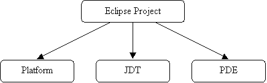

|
Eclipse Project Charter - v0.52 |
|||||||||||||||||||||||||||||||||||
|
Overview Mission The success of Eclipse depends on how well it enables a wide range of tool builders to build best of breed integrated tools. But the real vision of Eclipse as an industry platform is only realized if these tools from different tool builders can be combined together by users to suit their unique requirements, in ways that the tool builders never even imagined. The mission of the Eclipse Project is to adapt and evolve the Eclipse technology to meet the needs of the Eclipse tool building community and its users, so that the vision of Eclipse as an industry platform is realized. Scope

The Platform subproject is further subdivided into the following components:
The JDT subproject is further subdivided into the following components:
The PDE subproject is further subdivided into the following components:
Project Management Committee The Eclipse PMC is responsible for the strategic direction and success of the Eclipse Project. This governing and advisory body is expected to ensure the project's welfare and guide its overall direction. The PMC is responsible for overall development direction, conflict resolution, development processes and infrastructure, and the overall technical success of the project. The PMC has the following responsibilities:
The PMC Lead is appointed by the Board. The initial PMC is selected by the PMC Lead. Thereafter, to become a member of the PMC, an individual must be nominated by a member of the PMC, and unanimously approved by all PMC members. The goal is to keep the membership of the PMC very small. In the unlikely event that a member of the PMC becomes disruptive to the process or ceases to contribute for an extended period, the member may be removed by unanimous vote of remaining PMC members. The PMC is responsible for producing and maintaining the project charter. Development must conform to any rules or processes outlined in the charter, so a change to the development process may necessitate a change to the charter. The work of the PMC is shared by the PMC members. All PMC members are expected to contribute actively. In particular, PMC members are expected to take responsibility for overseeing certain areas of work in the project, and reporting to the PMC on these areas. Active participation in the user newsgroup and the appropriate developer mailing lists is a responsibility of all PMC members, and is critical to the success of the project. PMC members are required to monitor the main project mailing list, and the developer mailing lists for all subprojects and components they are overseeing. Roles Users Developers Committers In order for a Developer to become a Committer, another Committer for the subproject (or component) can nominate that Developer or the Developer can ask for it. Once a Developer is nominated, the Committers for the subproject (or component) will vote. If there are at least 3 positive votes and no negative votes, the Developer is recommended to the PMC for commit privileges. If the PMC approves, the Developer is converted into a Committer and given write access to the source code repository for that subproject (or component). Becoming a Committer is a privilege that is earned by contributing and showing discipline and good judgement. It is a responsibility that should be neither given nor taken lightly At times, Committers may go inactive for a variety of reasons. The decision making process of the project relies on active committers who respond to discussions and votes in a constructive and timely manner. The PMC is responsible for ensuring the smooth operation of the project. A Committer that is disruptive, does not participate actively, or has been inactive for an extended period may have his or her commit status removed by the PMC. Active participation in the user newsgroup and the appropriate developer mailing lists is a responsibility of all Committers, and is critical to the success of the project. Committers are required to monitor and contribute to the user newsgroup. Committers are required to monitor the developer mailing list associated with all subprojects and components for which they have commit privileges. This is a condition of being granted commit rights to the subproject or component. It is mandatory because committers must participate in votes (which in some cases require a certain minimum number of votes) and must respond to the mailing list in a timely fashion in order to facilitate the smooth operation of the project. When a Committer is granted commit rights they will be added to the appropriate mailing lists. A Committer must not be unsubscribed from a developer mailing list unless their associated commit privileges are also removed. Committers are required to track, participate in, and vote on, relevant discussions in their associated subprojects and components. There are three voting responses: +1 (yes), -1 (no, or veto), and 0 (abstain). Committers are responsible for proactively reporting problems in the bug tracking system, and annotating problem reports with status information, explanations, clarifications, or requests for more information from the submitter. Committers are responsible for updating problem reports when they have done work related to the problem. Subprojects When a new subproject is created, the PMC appoints a subproject lead to act as the technical leader and names the initial set of Committers for the subproject. Thereafter the PMC may appoint a new subproject lead from time to time as required, but the new subproject lead must be confirmed by a majority of the other Committers of the subproject. Subproject leads are accountable to the PMC for the success of their project. Subproject Components Ports Architecture Team Infrastructure
The Development Process Each subproject must identify, and make available on its web site, the requirements and prioritizations it is working against in the current release cycle. In addition, each subproject must post a release plan showing the date and content of the next major release, including any major milestones, and must keep this plan up to date. The Committers of a subproject or component decide which changes may be committed to the master code base of a subproject or component respectively. Three +1 ('yes' votes) with no -1 ('no' votes or vetoes) are needed to approve a code change. Vetoes must be followed by an explanation for the veto within 24 hours or the veto becomes invalid. All votes are conducted via the developer mailing list associated with the subproject or component. Special rules may be established for subprojects or components with fewer than three Committers. For efficiency, some code changes from some contributors (e.g. feature additions, bug fixes) may be approved in advance, or approved in principle based on an outline of the work, in which case they may be committed first and changed as needed, with conflicts resolved by majority vote of the Committers of the subproject or component, as applicable. More restrictive rules for releasing changes may be established by the PMC near the end of release cycles or for maintenance streams. The master copy of the code base must reside on the project web site where it is accessible to all developers and committers. Committers must check their changes and new work into the master code base as promptly as possible (subject to any check-in voting rules that may be in effect) in order to foster collaboration among widely distributed groups and so that the latest work is always available to everyone. The PMC is responsible for establishing a release engineering and build process to ensure that builds can be reliably produced on a regular and frequent basis from the master code base and made available for download from the project web site. The PMC is responsible for establishing the level of testing appropriate for each subproject, and approving the test plans. All development technical discussions are conducted using the development mailing lists. If discussions are held offline, then a summary must be posted to the mailing list to keep the other committers informed. Licensing All contributions must contain the following copyright notice. /********************************************************************** Copyright (c) {date} {name of original contributor} and others.
All rights reserved. This program and the accompanying materials are made available under the terms of the Common Public License v1.0 which accompanies this distribution, and is available at http://www.eclipse.org/legal/cpl-v10.html Contributors: <contributor1> - <description of contribution> <contributor2> - <description of contribution>... **********************************************************************/ The original contributor is the one who contributes the first version of the file. A contributor may be a person or an organization - whoever owns the copyright. If the contributor is an organization, the person may also be indicated. For each additional contributor, indicate the part of the code or contribution that came from the contributor, especially if it contains an interesting algorithm or data table etc. For clarity, also indicate the contributor in the actual section of contributed code. Also reference the bugzilla bug ID if applicable. The basic principle is to clearly identify the contribution... especially if it is a separable block of code. |
|
||||||||||||||||||||||||||||||||||